Created: 29 July 2011
Last Update: 01 September 2012
By: WPSTALL
Contact: http://themeforest.net/user/wpstall
Thank you for purchasing my theme. If you have any questions that are beyond the scope of this help file, please feel free to email via my user page contact form here.
Thanks so much!
Update Wordpress
To ensure a positive user experience, we highly recommend you update your wordpress to the latest stable version 3.4+. This will help to ensure that you are able to utilize all of the latest features of wordpress.
Installing GoodMinimal theme is just like installing any other wordpress theme. Its a simple process outlined in the 3 steps below.
The first step is to create site pages, and specify these pages in your Wordpress settings area.
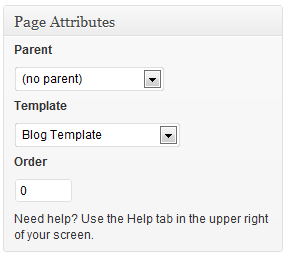
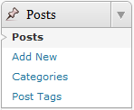
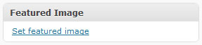
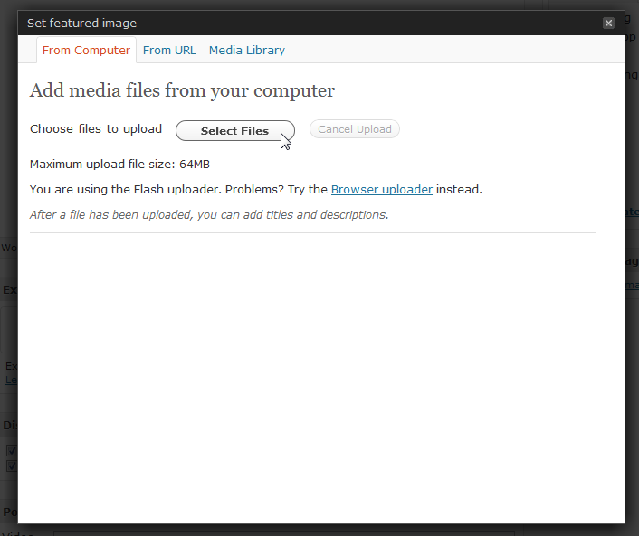
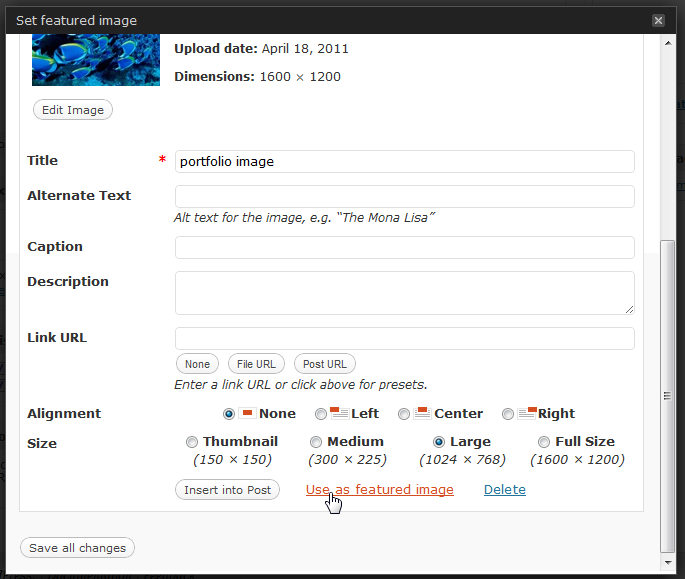
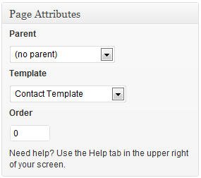
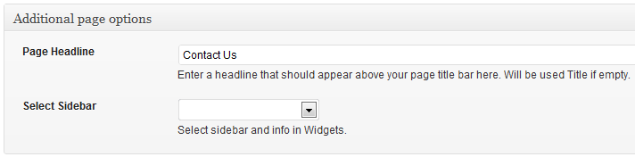
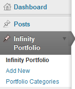
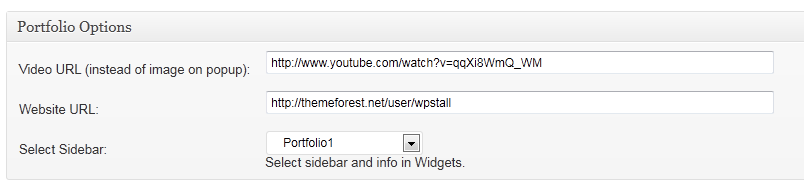
Examples of url to include in this input cell:
Another image -> http://www.sitename.com/images_fullscreen/2.jpg
Youtube content -> http://www.youtube.com/watch?v=qqXi8WmQ_WM
Vimeo content -> http://vimeo.com/8245346
QuickTime movies -> http://trailers.apple.com/movies/universal/despicableme/despicableme-tlr1_r640s.mov?width=640&height=360
External site -> http://www.google.com?iframe=true&width=100%&height=100%
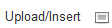
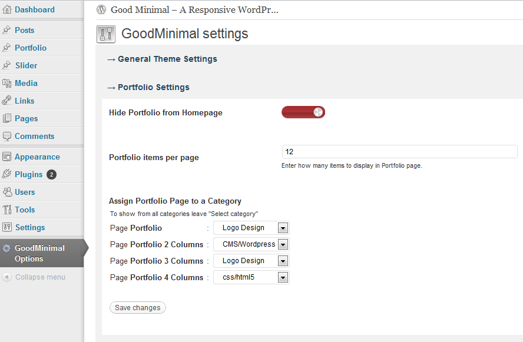
Note: On the homepage we list last 4 Portfolio items. In GoodMinimal Options -> Portfolio Settings you can hide portfolio section by check the checkbox Hide Portfolio from Homepage.
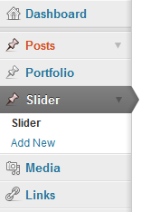
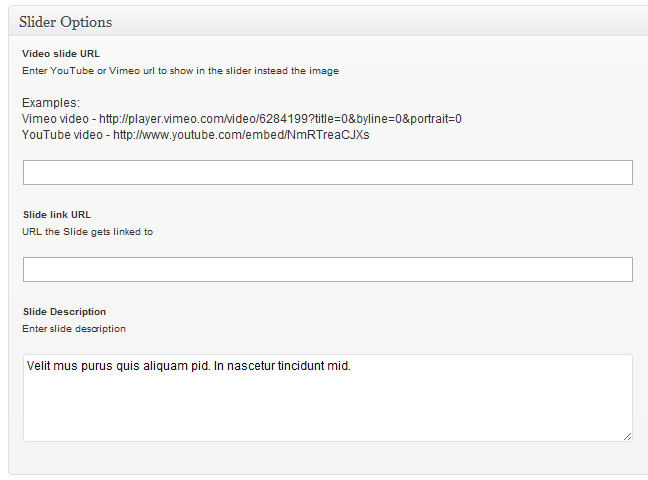
GoodMinimal theme have unlimited sidebars for widgets. Default sidebars are 11. All these sidebars you can find in Appearance -> Widgets.
To create and use unlimited sidebars is very simple. In GoodMinimal Options you must to create sidebars name and in select them in page templates, portfolio items, blog posts. Please see 2 images below where you can create additional sidebars and use them.
Create sidebars in GoodMinimal Options -> Sidebars. Click button Add New Sidebar, enter sidebar name and click button Save changes. To delete one sidebar, just leave empty the input, delete sidebar name and click button Save changes.
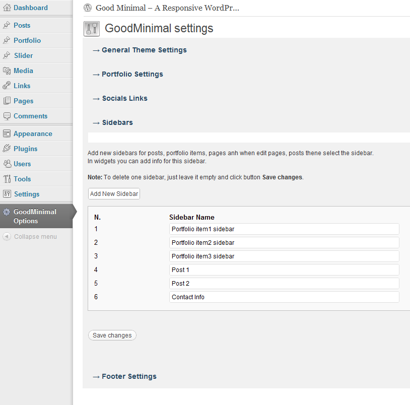
When you editing the page please find option Select Sidebar from section Additional page options.
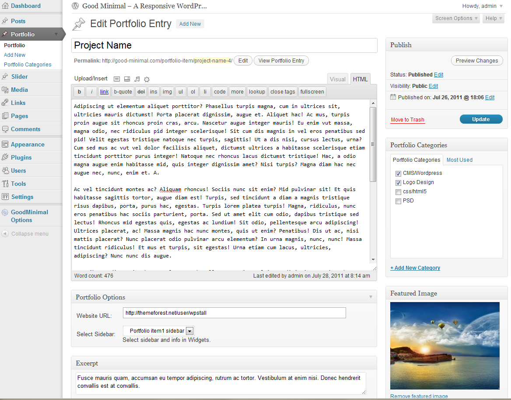
Check GoodMinimal shortcodes.
[slider][simpleslider id="3"][contact_form][googlemap width="615" height="300" src="http://maps.google.com/maps?hl=mo&gbv=2&q=New+york+map&ie=UTF8&hq=&hnear=New+York,+United+States&gl=md&t=m&z=10&ll=40.714353,-74.005973&output=embed"][lightbox group_id="firstgroup" thumb_url="http://www.html5awesome.com/themeforest/good-minimal/images/work_3.jpg" big_image_url="http://www.html5awesome.com/themeforest/good-minimal/images/work_2.jpg"]
[lightbox group_id="secondgroup" thumb_url="http://www.html5awesome.com/themeforest/good-minimal/images/work_3.jpg" video_url="http://www.youtube.com/watch?v=KsieadPPvJE"][gallery id="2" width="80" height="80"]
[gallery id="11" width="150" height="200"]
[btn type="small" title="Get In Touch!" url="http://www.themeforest.com"]
[btn type="big" title="Get In Touch!" url="http://www.themeforest.com"]
[video type="vimeo" id="16340475" width="450" height="280"]
[video type="youtube" id="cZxeFtpKzF8" width="520" height="520"][blockquote author="Author Name"] Blockquote content [/blockquote][our_team] [team name="JOHN DOE" position="CREATIVE DIRECTOR" image="http://www.sitename.com/image.jpg"] [team name="ROB SMITH" position="WEB DESIGNER" image="http://www.sitename.com/image.jpg"] [team name="KINO SELAVAN" position="WEB DESIGNER" image="http://www.sitename.com/image.jpg"] [team last="yes" name="KADOY" position="WEB PROGRAMMER" image="http://www.sitename.com/image.jpg"] [/our_team]
[service title="Design" image="http://www.sitename.com/image.jpg"] Service Content[/service]
[free_quote url="http://www.sitename.com/contact" button_title="Get In Touch"] We Are Creative Agency Who Creates Beautiful & Functional Websites [/free_quote]
[columns] [one_half title="Auto Responsive Layout" icon="http://www.sitename.com/alt2_32x32.png"] Column Content [/one_half] [one_half last="yes" title="Media Query Included" icon="http://www.sitename.com/new_window_32x32.png"] Column Content [/one_half] [/columns]
[columns] [one_third title="Fast Loading" icon="http://www.sitename.com/clock_32x32.png"] Column Content [/one_third] [one_third title="Auto Responsive Layout" icon="http://www.sitename.com/alt2_32x32.png"] Column Content [/one_third] [one_third last="yes" title="Media Query Included" icon="http://www.sitename.com/new_window_32x32.png"] Column Content [/one_third] [/columns]
[columns] [one_fourth title="Fast Loading" icon="http://www.sitename.com/clock_32x32.png"] Column Content [/one_fourth] [one_fourth title="Fast Loading" icon="http://www.sitename.com/clock_32x32.png"] Column Content [/one_fourth] [one_fourth title="Auto Responsive Layout" icon="http://www.sitename.com/alt2_32x32.png"] Column Content [/one_fourth] [one_fourth last="yes" title="Media Query Included" icon="http://www.sitename.com/new_window_32x32.png"] Column Content [/one_fourth] [/columns]
[columns] [one_fifth title="Fast Loading" icon="http://www.sitename.com/clock_32x32.png"] Column Content [/one_fifth] [one_fifth title="Fast Loading" icon="http://www.sitename.com/clock_32x32.png"] Column Content [/one_fifth] [one_fifth title="Fast Loading" icon="http://www.sitename.com/clock_32x32.png"] Column Content [/one_fifth] [one_fifth title="Auto Responsive Layout" icon="http://www.sitename.com/alt2_32x32.png"] Column Content [/one_fifth] [one_fifth last="yes" title="Media Query Included" icon="http://www.sitename.com/new_window_32x32.png"] Column Content [/one_fifth] [/columns]
I've included 1 psd with this theme:
You can find the psd's files on the PSD folder
General Theme Settings - general theme settings like select color style, logo, etc.
Portfolio Settings - hide portfolio listing from homepage, Portfolio items per page.
Slider Settings - change Flex silder options.
Social Links - set social links that will be displayed in the header.
Sidebars - create unlimited sidebars.
Contact Settings - enter contact email, enable reCAPTCHA.
Footer Settings - enter trackinkg code and footer copyright info.
Once again, thank you so much for purchasing this theme. As I said at the beginning, I'd be glad to help you if you have any questions relating to this theme. No guarantees, but I'll do my best to assist. If you have a more general question relating to the themes on ThemeForest, you might consider visiting the forums and asking your question in the "Item Discussion" section.
WPSTALL